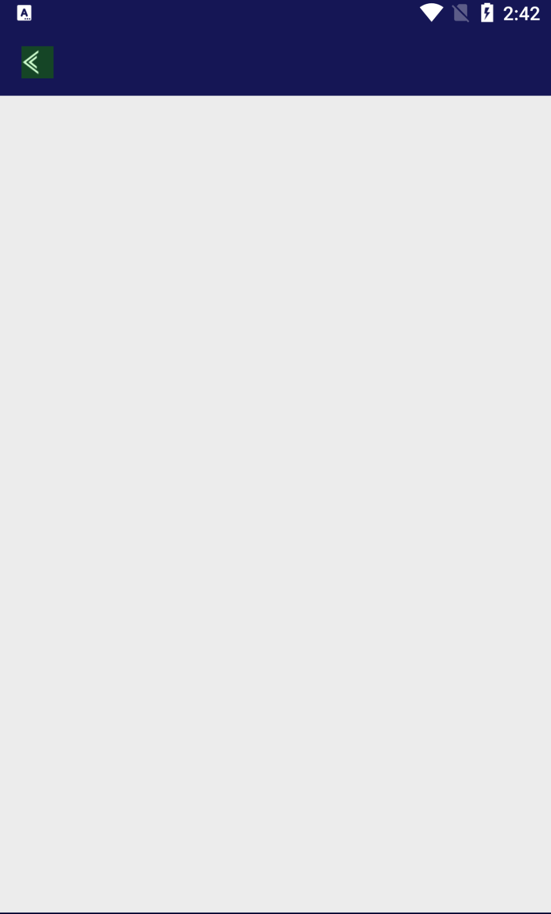
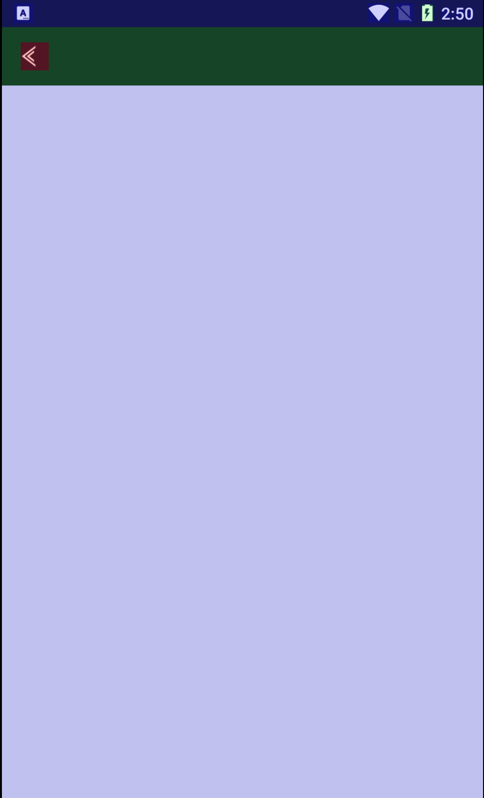
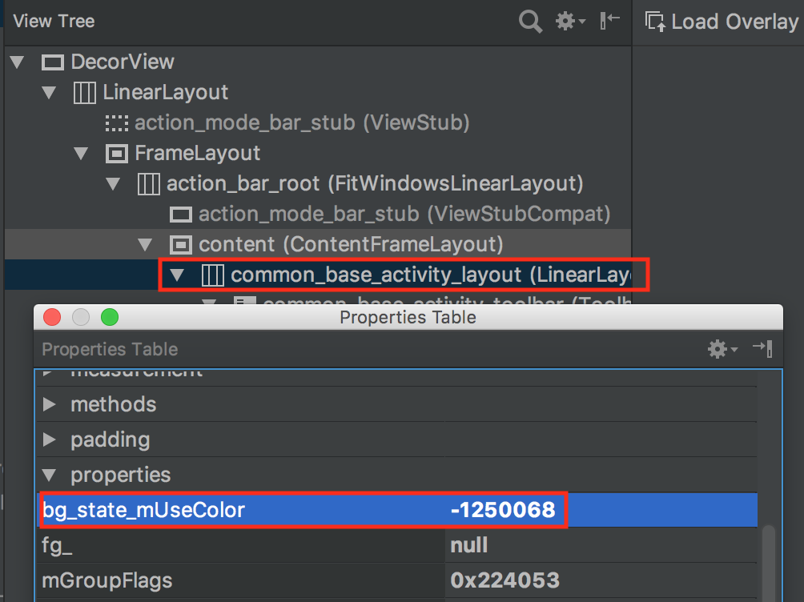
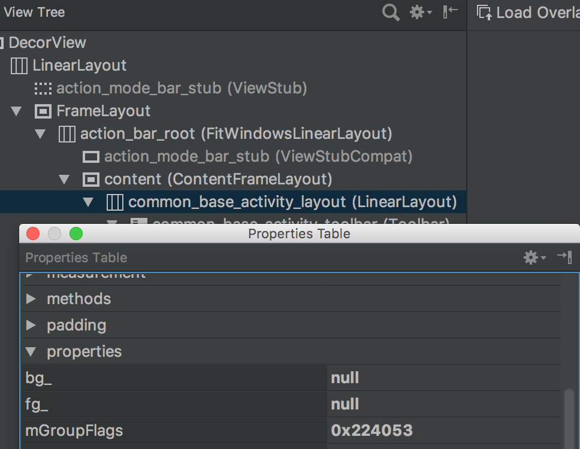

记一次减少过度绘制实战
去掉不必要的背景是减少过度绘制的一种简单的方式。如何在实际项目应该该技巧呢？
简介
官方提供了几个减少过度绘制的常见策略：
- Removing unneeded backgrounds in layouts.
- Flattening the view hierarchy.
- Reducing transparency.
其中第一个策略简单易用，主要涉及到的开发工具包括：
- GPU呈现模式分析 (Profile GPU Rendering)
- 调试GPU过度绘制
- Layout Inspector
问题描述
分析app过度绘制问题时发现应用中的某个页面过度绘制次数比预期中的多一次。见下图中的蓝色区域。

多次检查该页面未发现问题原因。于是重新写一个完全为空的页面，不妨称之EmptyActivity，发现有如下现象：
- 如果EmptyActivity直接继承自AppCompatActivity，过度绘制次数为0，符合预期。
- 如果EmptyActivity继承自我们自定义的BaseActivity，过度绘制次数为1，比预期中多一次。
见对比结果

预期应该是左图，没有过度绘制(无颜色)。但实际却是右图，有一次过度绘制(蓝色)。推测问题是由BaseActivity引起。
问题分析
EmptyActivity是空白页面，所以从它开始分析BaseActivity的问题还是相当方便的。很快就找到问题，BaseActivity以id为common_base_activity_layout的LinearLayout作为根布局，子类提供的实际布局通过setSubContentView()被添加到根布局。而setSubContentView()会给根布局设置一个默认的背景色。
1 | public class BaseActivity extends AppCompatActivity { |
Layout Inspector中很容易看到上述根布局的背景色：

而app的主题中也通过android:windowBackground属性给所有的Window添加了一个默认背景色，所以不可避免地多出一次过度绘制。
解决方法
Window的背景色和根布局的背景色，我们可以只取其一。考虑到主题中设置Window背景色更直观易维护，所以去掉了根布局的背景色。

还记得过度绘制的颜色规则么？参考自官网
- 真彩色： 没有过度绘制
- 蓝色： 过度绘制 1 次
- 绿色： 过度绘制 2 次
- 粉色： 过度绘制 3 次
- 红色： 过度绘制 4 次或更多
去掉了根布局的背景色，为App整体上减少一次不必要的过度绘制。 所以你会发现优化后app里原先的蓝色变成了无色，绿色变成了蓝色，粉色变成了绿色。